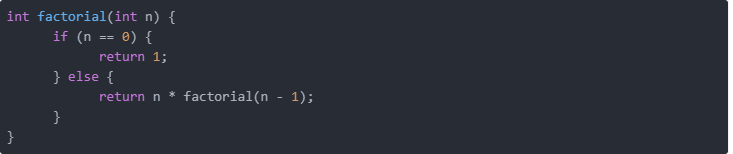

La recursividad es un concepto fundamental en matemáticas y en computación. Es una alternativa diferente para implementar estructuras de repetición
(ciclos). Los módulos se hacen llamadas recursivas. Se puede usar en toda situación en la cual la solución pueda ser expresada como una secuencia de
movimientos, pasos o transformaciones gobernadas por un conjunto de reglas no ambiguas.
Las funciones recursivas se componen de:
Los programas recursivos son más cercanos a la descripción matemática, más faciles de analizar, se adaptan mejor a las estructuras de datos y ofrecen
soluciones simples. Sin embargo, cuando se úsan arreglos largos, o se ocupa una larga ejecución es mejor el uso de la iteración.
Cuando un procedimeinto incluye una llamada a sí mismo se conoce como recursión directa. Cuando un procedimiento llama a otro procedimiento y éste
causa que el procedimiento original sea invocado, se conoce como recursión indirecta.